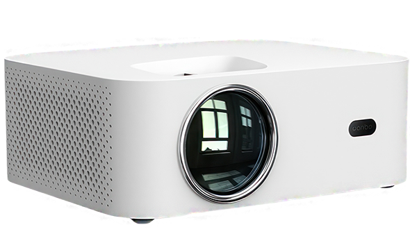
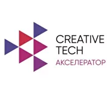
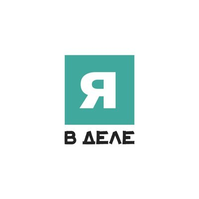
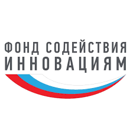
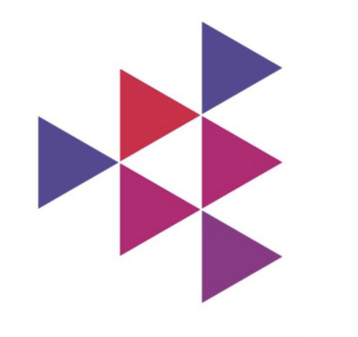
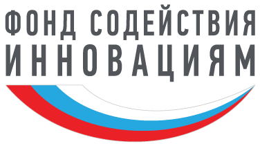
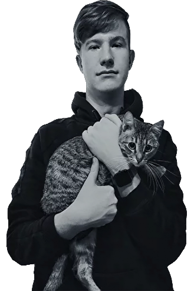

<!DOCTYPE html><html lang="ru"></html><head><title></title><meta charset="UTF-8"><meta name="viewport" content="width=device-width, initial-scale=1.0"><link rel="preconnect" href="https://fonts.googleapis.com">
<link rel="preconnect" href="https://fonts.gstatic.com" crossorigin>
<link href="https://fonts.googleapis.com/css2?family=Manrope:wght@200..800&family=Source+Code+Pro:ital,wght@0,200..900;1,200..900&display=swap" rel="stylesheet"><link rel="stylesheet" href="css/config.css"><link rel="stylesheet" href="css/icons.css"><link rel="stylesheet" href="css/style.css"></head><body><header class="header"><div class="header__container"><nav class="header__menu menu"><ul class="menu__list"><li class="menu__item"><a class="menu__link" href="#">Главная</a></li><li class="menu__item"><a class="menu__link" href="#">Характеристики </a></li><li class="menu__item"><a class="menu__link" href="#">Актуальность</a></li><li class="menu__item"><a class="menu__link" href="#">Путь проекта</a></li><li class="menu__item"><a class="menu__link" href="#">Команда</a></li><li class="menu__item"><a class="menu__link" href="#">Обратная связь</a></li></ul></nav><button class="burger"><div></div></button></div></header><section class="startpage"> <div class="startpage__container"> <div class="startpage__logo logo"></div><h1 class="startpage__title title">Удобно<br>Уютно<br>Солидно</h1><p class="startpage__desc"> Добро пожаловать на сайт, посвященный симбиозу неттопа и портативного проектора! Здесь вы найдете множество полезных материалов об использовании этих устройств вместе для создания удивительных проектов и реализации своих идеи. Мы надеемся, что наш сайт станет для Вас ценным источником информации и вдохновения и поможет раскрыть все возможности неттопа и портативного проектора. <br>Спасибо, что выбираете нас!</p></div></section><section class="characteristics"><div class="characteristics__container"> <h2 class="characteristics__title title">Характеристики</h2><div class="characteristics__blocks"><div class="characteristics__item"> <h4 class="characteristics__name">Неттоп</h4><ul class="characteristics__list list"> <li class="list__item">ОС Windows 11 Pro</li><li class="list__item">Процессор Intel Celeron J4125 4 x 2GHz</li><li class="list__item">Интегрированная видеокарта Intel UHD Graphics 600</li><li class="list__item">Оперативная память 8 Гб SO-DIMM DDR4</li><li class="list__item">Встроенная память 128 Gb SSD M.2</li><li class="list__item">Гигабитный Ethernet порт Беспроводная сеть WiFi AC 2.4 и 5 ГГц, Bluetooth 5.0</li><li class="list__item">Кардридер MicroSD 2.x/3.x/4.x (SDSC/SDHC/SDXC)</li><li class="list__item">Порты USB 1хUSB 3.0, 1хUSB 2.0, 1хUSB-C 2.0/PD</li></ul></div><div class="characteristics__item"> <h4 class="characteristics__name">Проектор</h4><ul class="characteristics__list list"> <li class="list__item">Разрешение: 1920x1080 px (Full HD)</li><li class="list__item">Контрастность: 2000:1</li><li class="list__item">Расстояние до экрана: от 1.25 метра до 2.5 метра</li><li class="list__item">Формат изображения: 16:9 и 4:3</li><li class="list__item">Срок службы лампы: LED-лампа обеспечивает 20000 часов непрерывной работы в экономичном режиме</li></ul></div><div class="characteristics__item"> <h4 class="characteristics__name">Блок питания</h4><ul class="characteristics__list list"> </ul></div><div class="characteristics__item"> <h4 class="characteristics__name">Корпус</h4><ul class="characteristics__list list"> </ul></div></div></div></section><section class="actuality"><div class="actuality__header"> <div class="actuality__container"> <h2 class="actuality__title title">Актуальность</h2></div></div><div class="actuality__container"> <div class="actuality__list points"><div class="actuality__point points__item"><div class="points__value">1</div><div class="points__info"> <h4 class="points__name">Неповторимая атмосфера</h4><p class="points__desc">Симбиоз неттопа и портативного проектора — это идеальное решение для тех, кто хочет получить максимальное удовольствие от просмотра контента. Эти два устройства вместе создают неповторимую атмосферу, которая позволяет наслаждаться качественным изображением и звуком в любом месте и в любое время.</p></div></div><div class="actuality__point points__item"><div class="points__value">2</div><div class="points__info"> <h4 class="points__name">Портативность</h4><p class="points__desc">Портативный проектор является идеальным решением для тех, кто любит смотреть фильмы, сериалы и видео на большом экране. Он может проецировать изображение на любую поверхность, будь то стена, потолок или экран. Благодаря своей портативности, его легко брать с собой в поездки или использовать для организации домашнего кинотеатра.</p></div></div><div class="actuality__point points__item"><div class="points__value">3</div><div class="points__info"> <h4 class="points__name">Функциональность</h4><p class="points__desc">Неттоп, в свою очередь, является идеальным решением для тех, кто хочет иметь доступ к интернету, использовать приложения и работать с файлами в любой ситуации. Он может быть подключен к портативному проектору, что позволяет создавать уникальные развлекательные и рабочие сценарии. Например, вы можете использовать неттоп для просмотра фильмов, игр или презентаций на большом экране, а также для проведения веб-конференций или просмотра онлайн-курсов.</p></div></div><div class="actuality__point points__item"><div class="points__value">4</div><div class="points__info"> <h4 class="points__name">Мобильность</h4><p class="points__desc">Кроме того, сочетание неттопа и портативного проектора позволяет создавать мобильные кинотеатры, организовывать презентации или встречи в любом месте, будь то дом, офис, кемпинг или пляж. Вы можете наслаждаться качественным контентом в любой ситуации и делиться им с друзьями и близкими.</p></div></div></div></div></section><section class="conclusion"><div class="conclusion__block" id="block_1"> <p class="conclusion__text">Таким образом, симбиоз неттопа и портативного проектора - это удобное и многофункциональное решение для всех, кто хочет получить максимальное удовольствие от просмотра контента. Эти устройства дополняют друг друга и создают уникальный пользовательский опыт, который можно использовать для различных целей, от работы до развлечений.</p></div><div class="conclusion__block" id="block_2"> <p class="conclusion__text">Если вы хотите получить устройство, которое может быть вашим персональным кинотеатром, офисом и мобильным рабочим местом в одном, то симбиоз неттопа и портативного проектора - идеальный выбор для вас.</p></div></section><section class="path"><div class="path__header"><div class="path__container"><h2 class="path__title title">Путь проекта</h2></div></div><div class="path__slider"><button class="path__toggle slider__toggle _prev">❮</button><button class="path__toggle slider__toggle _next">❯</button><div class="path__dots"></div><div class="path__list slider"> <div class="path__item"><p class="path__desc">2022 — Участие в акселерационной программе «Creative.Tech» Университета Сервиса.</p><h4 class="path__name">Creative.Tech</h4></div><div class="path__item"><p class="path__desc">2023 — Участие в акселерационной программе «Я в деле».</p><h4 class="path__name">Я в деле</h4></div><div class="path__item"><p class="path__desc">2023 — Победа в конкурсе «Студенческий стартап» Фонда содействия инновациям.</p><h4 class="path__name">Студенческий стартап</h4></div><div class="path__item"><p class="path__desc">2023 — III место в акселерационной программе «Creative.Tech 2.0» Университета Сервиса.</p><h4 class="path__name">Creative.Tech 2.0</h4></div></div></div></section><section class="found"> <div class="found__container"> <h4 class="found__title">Проект развивается при поддержке Фонда содействия развитию малых форм предприятий в научно-технической сфере</h4></div><div class="found__photo"></div></section><section class="team"> <div class="team__container"> <h2 class="team__title title">Команда</h2><div class="team__slider"> <button class="team__toggle slider__toggle _prev">❮</button><button class="team__toggle slider__toggle _next">❯</button><div class="team__list"> <div class="team__member"> <h3 class="team__name">Никита</h3><h5 class="team__position">Автор идеи</h5></div><div class="team__member"> <h3 class="team__name">Марина</h3><h5 class="team__position">Дизайнер Тестировщик</h5></div><div class="team__member"> <h3 class="team__name">Тёма</h3><h5 class="team__position">Веб-мастер</h5></div></div></div></div></section><section class="contacts"><div class="contacts__container"> <h4 class="contacts__title">Связь с нами</h4><div class="contacts__devider"> </div><div class="contacts__list"> <a class="contacts__item _email" href="rbmgrn@gmail.com" target="_blank">Email</a><a class="contacts__item _tg" href="http://t.me/MC_Beast" target="_blank">Telegram</a><a class="contacts__item _vk" href="https://vk.com/beastvk" target="_blank">VK</a></div></div></section><footer class="footer"><div class="footer__container"></div></footer><script src="https://ajax.googleapis.com/ajax/libs/jquery/3.5.1/jquery.min.js"></script><script src="https://unpkg.com/@babel/standalone/babel.min.js" type="text/babel"></script><script src="js/libs/slick.js"></script><script src="js/config.js"></script><script src="js/script.js"></script></body>